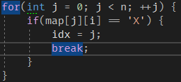

최근 언리얼 엔진을 이용한 프로젝트를 한 적이 있었다. 언리얼 엔진은 프로그래밍을 할 때 블루프린트를 이용할 수 있지만, 구조가 복잡해지면 가독성이 떨어지기도 하고, 결정적으로 Gameplay Ability System이 블루프린트를 지원하지 않기 때문에 핵심 파트는 C++로 개발하고 있었다.
본인은 Windows 환경에서 C++을 개발할 때 거의 Visual Studio를 사용한다. 가장 큰 이유는 디버깅하기 편해서지만, Intellisense 기능도 상당 부분 차지한다. 이 기능이 있어야 Syntax highlighting이나 Code completion, Navigation등 여러 편리한 기능들을 쓸 수 있다. 소규모 프로젝트에서는 이 기능들이 잘 작동하지만, 언리얼 엔진 프로젝트는 엔진 소스코드도 참조해서 그런지 매우 느리게 작동한다.

위 영상처럼 다른 파일을 열 때마다 Intellisense가 코드를 분석하는데 오랜 시간이 걸려서 개발하는데 많이 불편했다.
그래서 찾아보니까 Visual Assist 또는 ReSharperC++같은 추가 Extension을 많이 사용하는 것 같다. Visual Assist는 지인도 쓰고있고 많이 쓰는 것 같은데… 유료다. 물론 ReSharperC++도 유료지만 JetBrains사 제품들은 학생인증을 하면 무료로 쓸 수 있어서 후자를 선택했다.

적용하니 12초에서 1초로 매우 빠르게 완료가 된다. 다만 프로젝트를 열 때 플러그인 초기화 + 인덱싱을 하는지 조금 기다려야 한다 (한 1~2분?).
이외에도 여러 유용한 기능들이 많은데 그중에 본인이 자주 쓰는 것들을 정리해봤다. 단축키 설정은 Visual Studio scheme을 이용한다.
Code / File template
템플릿 기능은 자주 쓰는 코드 조각들을 미리 정의해서 쉽게 가져다 쓸 수 있는 기능이다. 그중에 본인이 많이 쓰는 것은
-
beg..end - STL container에서 시작과 끝을 지정하는 일이 많은데, 그때 사용한다.
-
fori, forr - 각각 순차/역순으로 탐색하는 for문을 만든다.


이외에도 사용자가 직접 템플릿을 정의해서 만들 수 있다.
Inlay hints
JetBrains사 제품에서 많이 볼 수 있는데, 함수를 호출 할 때 매개변수의 이름을 보여주는 기능이다. Python이나 Swift같은 언어처럼 매개변수를 명시적으로 지정할 수는 없지만, hint로 보여주니까 괜찮은 것 같다. 레퍼런스로 넘겨지는 경우에는 [&]를 표시한다.

개인적으로 이 기능의 최대 강점은 struct를 초기화 할 때 변수들 이름을 보여주는 것이다. {}를 이용해 초기화를 할 때 변수 이름들을 보여줘 값들이 어떤 변수에 들어가는지 바로 알 수 있다.
Search everywhere

Mac의 Spotlight랑 비슷한 기능이다. Ctrl + T를 누르면 검색창이 뜨는데, 여기에 찾고싶은 것을 입력하면 해당하는 이름의 클래스/함수/변수명을 찾거나, 텍스트를 찾는 기능이다. 솔루션 탐색기를 뒤질 필요 없이 검색해서 바로 찾을 수 있어서 편리하다. 만약에 타입들로만 찾고 싶다면 Ctrl + T를 두 번, 파일명으로만 찾고 싶다면 Ctrl + Shift + T 등 선택적으로도 탐색할 수 있다.
Navigation
특정한 위치로 이동하는 기능들이다. Alt + ` 를 누르면 위 사진처럼 사용할 수 있는 기능들이 나온다. 자주 사용하는 기능들로는,
-
Find usage

-
Shift + F12를 누르면 해당 함수나 변수가 쓰이고 있는 곳들을 보여준다. Visual Studio에도 있는 기능이지만, 속도는 비교할 수 없을 정도로 빠르다. -
Shift + Alt + F12를 누르면 별도의 창이 아닌 바로 볼 수 있다.
-
-
Base / Derived Symbol

- 함수나 클래스의 부모 / 자식으로 바로 이동할 수 있다.
Alt + Home/Alt + End로 이동 가능하다.
- 함수나 클래스의 부모 / 자식으로 바로 이동할 수 있다.
Insertion
특정 코드들을 넣을 수 있는 기능이다. Alt + Insert를 누르면 사용할 수 있는 기능들이 나온다. 자주 사용하는 기능들로는,
- Copy and move operations

- 복사/이동 관련 함수들을 추가해준다. 맴버 변수들도 반영해서 함수가 만들어진다.
- Overriding / Missing memebers
- 오버라이딩 할 함수나 추가해야 할 함수들을 추가한다. 하지만 보통 밑에 있는 빠른 수정 기능으로 이용한다.
빠른 수정
코드에 문제가 있거나 수정사항이 있을만한 곳에 물결 표시가 뜨는데, 이를 해결해주는 기능이다. Alt + Enter로 사용할 수 있다. 자주 사용하는 기능들로는,
-
Switch - generate missing case statements

- switch 값이 enum class같이 정해져 있는 경우, 빠져있는 case들을 자동으로 추가하는 기능이다.
-
Class 수정
- 만들어야 할 함수(pure virtual function, …)들을 추가할 수 있다.
-
Function 수정

- 구현이 없는 함수에 구현을 추가할 수 있다.
-
including

- 코드를 작성하는데 만약 include되지 않은 것을 쓰려하면 자동으로 해당 헤더파일을 include해준다.
Refactoring
말 그대로 리펙토링 기능이다. Ctrl + Shift + R로 사용할 수 있다. 자주 사용하는 기능으로는,
-
Rename
- 함수나 변수의 이름을 바꿔주는 기능이다.
Ctrl + R, R로 실행할 수 있다. 사용중인 곳에도 자동으로 바뀐다.
- 함수나 변수의 이름을 바꿔주는 기능이다.
-
Change signature
-
함수의 이름 뿐만 아니라 선언까지 바꿔주는 기능이다.
Ctrl + R, S로 실행할 수 있다. return type, 매개변수 추가 / 수정 / 제거 등 여러가지를 바꿀 수 있다. 이상하게 이 창에서는 입력하는 속도가 상당히 느려진다. -
추가되는 매개변수가 있을 경우, 이 함수를 사용하는 곳에서 어떤 값으로 넣을지 정할 수 있다.
-
Unreal Engine support
당연히 언리얼 엔진 기능도 지원한다. 이러한 플러그인을 쓰게 된 계기가 언리얼 엔진 지원 때문이니…
-
Reflection code completion

- 언리얼 엔진에서는 C++에서는 지원하지 않는 리플렉션 기능을 위해
UCLASS,UFUNCTION과 같은 여러 매크로들을 사용한다. 하지만 실제로는 아무 내용도 없는 매크로이기 때문에, Visual Studio에서는 리플렉션 관련 코드들 자동 완성이 되지 않는데, 이러한 매크로들을 자동 완성이 되도록 해준다.
- 언리얼 엔진에서는 C++에서는 지원하지 않는 리플렉션 기능을 위해
-
UE4 전용 코드 검사

-
역시 리플렉션 기능을 위해 매크로를 필수적으로 넣어야 하는 곳들이 있는데, 빠진 곳에 오류를 표시해서 알 수 있게 해준다.

-
언리얼 엔진에는 자체적인 코딩 컨벤션이 있는데, 이를 지키지 않을 경우 오류를 표시해준다.
-
Etc
-
To-do items

- 코드에 있는 TODO들을 모아서 보여주는 기능이다.
Ctrl + Alt + D를 눌러 띄울 수 있다.
- 코드에 있는 TODO들을 모아서 보여주는 기능이다.
-
std::make_shared 매개변수

- 스마트 포인터를 생성하기 위해서는 보통
std::make_shared나std::make_unique함수를 많이 사용한다. 근데 이 함수들을 이용하면 생성자의 매개변수들을 에디터에서 볼 수가 없고, 만약에 잘못 넣은 경우 에디터에 바로 나오지 않고 컴파일해야 나오기 때문에 오류를 알아보기가 힘들다. 이러한 단점을 보완해 에디터에서 생성자의 매개변수들을 볼 수 있고, 잘못 넣은 경우 오류를 바로 표시해준다.
- 스마트 포인터를 생성하기 위해서는 보통
-
Extend selection

- 선택 범위를 점점 늘려가거나 줄이는 기능이다. 보통 유용하게 쓰는 경우는 함수 파라미터나 인자들을 복사하는 경우이다.
-
Highlight usage in file

- 강조하고 싶은 곳에
Shift + Alt + F11을 누르면, 해당 파일 안에서 강조한 것들이 보라색으로 표시가 되는 기능이다. 물론 커서를 가져다대면 파란색으로 강조되긴 한다.
- 강조하고 싶은 곳에
-
break / continue 대상 표시

break나continue를 쓸 때 해당되는 반복문을 강조해준다. 이게if나 여러가지가 섞이면 알아보기가 힘든 경우가 많은데, 강조를 해줘서 쉽게 알아볼 수 있다.
이외에도 naming convention, uint test 등 여러 기능들이 있다. 하지만 소소한 단점들도 있는데,
- 처음에 프로젝트를 열었을 때 플러그인 로드 + 분석때문에 조금 기다려야 한다. 특히 언리얼 프로젝트인 경우, 맨 처음에 인덱싱하는데 2~5분정도 걸리고, 이후에 다시 열 때는 20초 정도 걸린다.
}나;를 넣을 때, 자동으로 formatting이 되지 않는다. 설정을 다 찾아서 수정해도 안 된다… 그래서 자동 fomatting은 Visual Studio 기능을 사용하고 있다.- 최근에 업데이트 하고나서 팅기는 경우가 가끔 발생한다. Visual Studio 문제일 수도 있으나, 보통 code completion 리스트가 뜰 때 팅기는 것으로 봐서 ReSharper 문제같다.
사람들이 왜 이런 플러그인들을 쓰는지 처음에는 잘 몰랐다. Visual Studio 기능만 해도 충분한 것 같은데 굳이 유로 플러그인들을 써야 하나…? 하는 생각이었다. 하지만 실제로 써보니까 그 이유를 알 것 같다. 무엇보다 네비게이션이나 코드 분석이 빨라서 좋았다. 아주 만족스럽게 사용하고 있다.